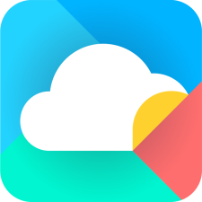
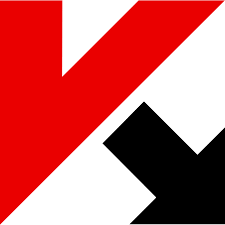
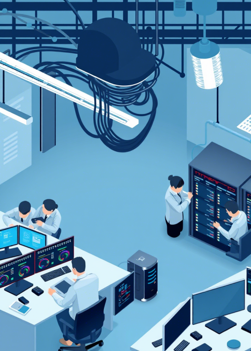

01
Понимаем
Обсуждаем вашу ситуацию, задачи и особенности бизнеса.
Берём на себя IT-задачи и заботу о команде.
Вы сосредоточены на развитии бизнеса.
Надёжная основа
для ваших решений

МойОфис
ЛабораторияДелаем сложное понятным,
а повседневную работу — проще.
ООО «ТЕХНОСТАР» — российская компания в сфере IT-аутсорсинга и кадрового консалтинга. Подходим к каждой задаче индивидуально: от поддержки рабочих мест до развития инфраструктуры и команды.
Работаем с предприятиями производства, автобизнеса, досуга и оздоровительного отдыха. Понимаем, что у каждой отрасли — свои задачи.
От одного компьютера до всей инфраструктуры.
Подключаемся там, где нужны знания и опыт.

Поддержка компьютеров и офисной техники, помощь удалённым пользователям и послегарантийный ремонт оборудования.
Рабочие местаУдалённая помощьАдминистрирование серверов и локальных сетей. Поддержка IP-телефонии и АТС на базе Asterisk.
СерверыAsteriskУстановка, сопровождение и своевременное обновление программного обеспечения для работы вашей команды.
УстановкаОбновленияАнализ архитектуры существующей IT-инфраструктуры и возможностей её оптимизации.
АрхитектураОптимизацияРазвёртывание IT-инфраструктуры с «0»: от понимания задачи до готовой среды для работы.
Новые офисыРазвитие бизнесаВаша команда —
ваша точка роста.
Помогаем находить нужных людей, развивать их потенциал и проходить изменения вместе.
Временные сотрудники и их обучение, массовый подбор при открытии новых офисов, точечный поиск руководителей.
Оценка потенциала руководителей, корпоративные программы обучения и развития сотрудников.
Карьерная мобильность и аутплейсмент — поддержка трудоустройства сотрудников при изменениях в компании.
Обсуждаем вашу ситуацию, задачи и особенности бизнеса.
Подбираем подход к вашей IT-инфраструктуре или команде.
Согласуем детали и переходим к работе вместе с вами.
Расскажите, что важно для вашего бизнеса.
Начнём с простого разговора.